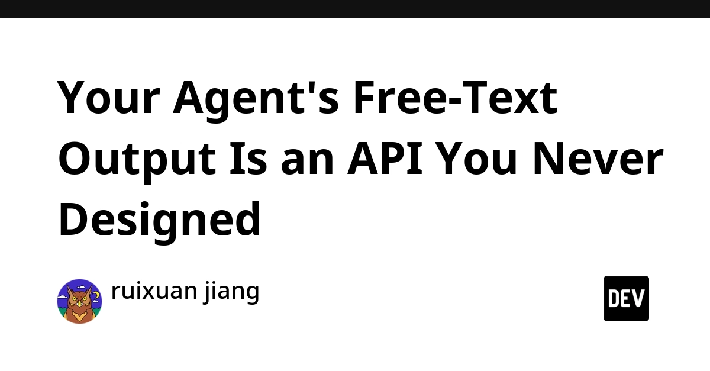
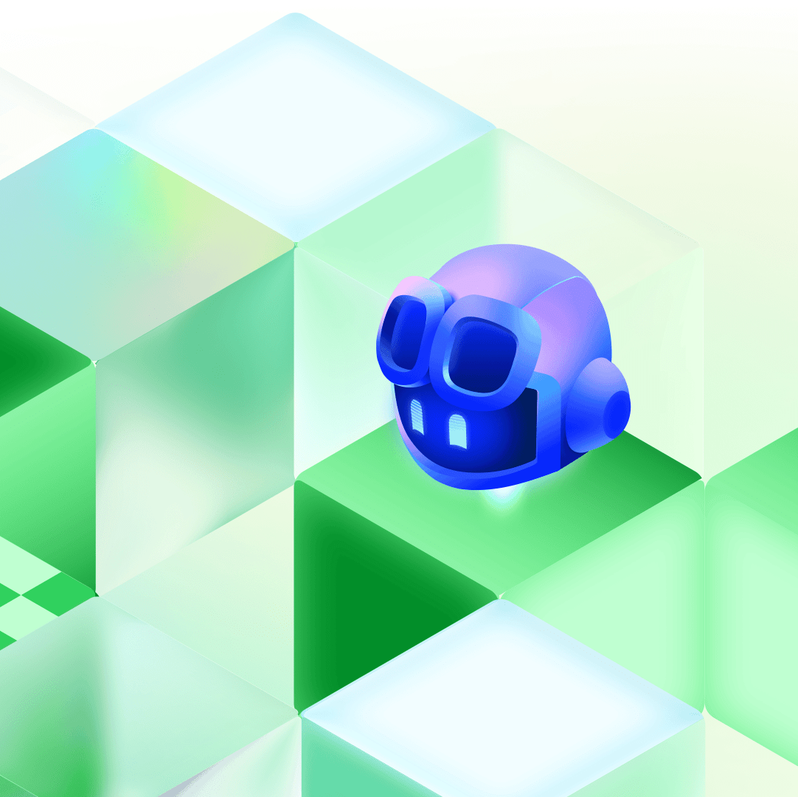
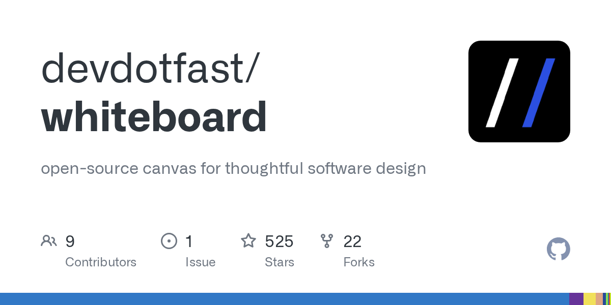
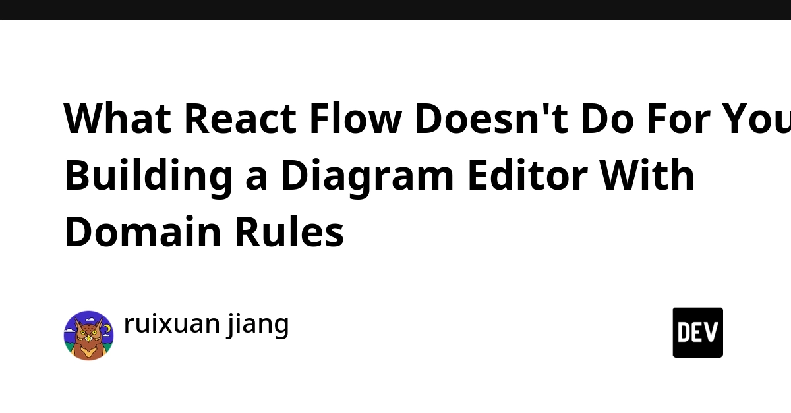
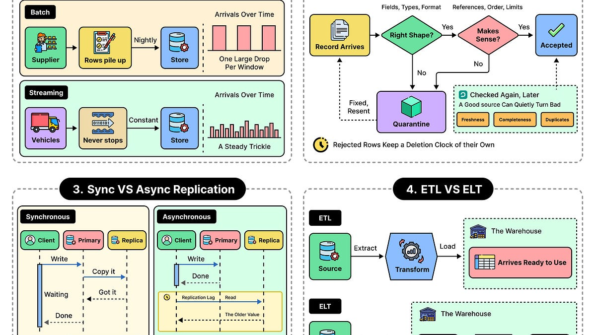
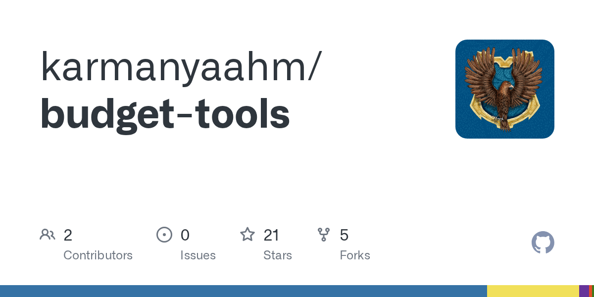

🔥 Top 3 (must read)
Your Agent's Free-Text Output Is an API You Never Designed
Most agent demos do not fail because of the model. They fail at the point where the model's text reply goes into your program, because a plain string has no schema (no fixed shape your code can trust). The post uses TypeScript examples to show why you should design this boundary like a real API. Why it matters: If your Node/TS services call LLMs, this is the most common place they break in production.

When chat is the wrong UI
GitHub says a chat box is not always the right way to work with Copilot. It presents "canvases": a more visual, hands-on workspace for tasks where chat does not fit well. Why it matters: It shows where AI coding tools are heading after chat. This is useful when you choose tools for your team.

Show HN: Whiteboard (YC W26) – An open-source IDE for thoughtful software design
(HN discussion) Whiteboard is an open-source IDE built for software design work, not only for writing code. It got strong interest on HN (215 points, 85 comments). Why it matters: Design-first tools can help your team think before AI agents write large amounts of code.

🛠 Tools & releases
What React Flow Doesn't Do For You
: A real case study. The author built a genogram (family diagram) editor on
@xyflow/react. The post covers the domain rules you still have to write yourself.
🤖 AI for developers
AI-powered fuzzing with the GitHub Security Lab Taskflow Agent
: A guide to a new fuzzing taskflow (fuzzing means sending lots of random or broken inputs to find bugs). It runs on GitHub Security Lab's Taskflow Agent AI framework.
The Pulse: a new trend of CPU shortages
: First there were GPU and memory shortages. Now AI agents use a lot of CPU when they call tools, and this is causing a CPU shortage. This matters for cloud capacity and cost planning.

👔 Engineering & teams
The Life of Data: From Creation to Deletion
: ByteByteGo walks through the full data lifecycle and the design choices you must make at each step. Good system-design material for a team discussion.

🎯 For me
The agent output as API post (Top 3) is a direct fit for Node/TS backends that call LLMs.
The React Flow case study is useful if any of your web apps needs a diagram or node editor.
No automation-testing (Playwright/Maestro/CI) or Flutter items today.
💡 App ideas & indie builds
Koi.rest
(HN): A calm page where you watch fish swim. Problem: stress and screen fatigue during the day. Inspiration: a very small, single-purpose app can still get strong interest (139 points). It shows how much a good mood and good design count.
K
Coast / retire calculator
(HN): Tells you how long you must work at your salary before you can "coast" or retire (FIRE planning). Problem: people cannot easily turn their salary into a clear timeline. Inspiration: 70 comments show that personal-finance tools start real discussion. One clear question plus one clear answer is a strong app format.

Air-gapped file encryption as a self-decrypting HTML page
(HN): It encrypts a file into a single HTML page that can decrypt itself. Problem: sending a secret file to someone without asking them to install any tool. Inspiration: using the browser as the only runtime removes the setup step for the user.
C
🎓 Try this
Take one place in your code where you parse an LLM reply as free text. Give it a fixed schema and validate the reply before your program uses it. The agent free-text output post explains the problem with TypeScript examples.